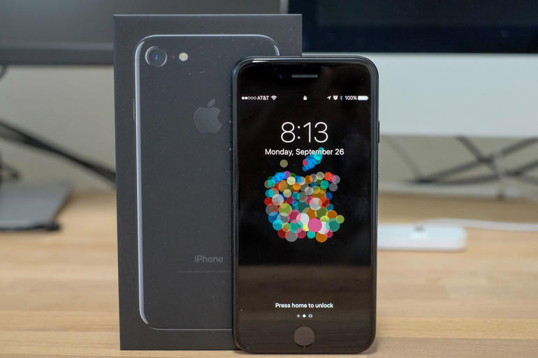
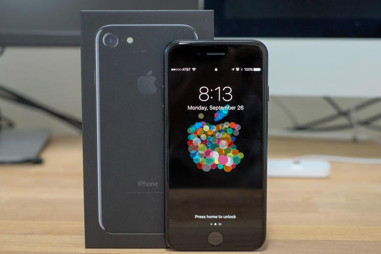

7 способів запам'ятовувати більше і вчитися швидше

Перестаньте жалеть о том, что быстро забываете важную информацию. Ведь вы можете развивать свою память или хотя бы использовать её текущий потенциал по максимуму. Для этого есть несколько простых и эффективных техник.
Наука пам'яті
Щоб розібратися в техніках запам'ятовування, спочатку давайте розглянемо, як же працює пам'ять.
Якщо вона є для вас загадкою, то ви не виняток. Вчені і філософи вже по меншій мере 2 000 років намагаються зрозуміти, як функціонує пам'ять, і все ще роблять нові відкриття. Приміром, за черговий прорив в цьому напрямку група британських вчених нещодавно отримала найбільшу премію в області нейронауки - один мільйон євро. Вони знайшли в мозку білок, який грає ключову роль у формуванні і втрати пам'яті. Ще більше відкриттів чекає нас попереду
Згідно з останніми уявленнями про роботу пам'яті, виділяють три її
Кодування
Перший етап, кодування, протікає, коли ви спостерігаєте якусь подію або будь-яку іншу інформацію. В цей час мозок починає усвідомлено вбирати звуки, зображення та інші доступні почуттям дані. Наприклад, уявіть свій перший візит в Лас-Вегас. Ваші спогади про цю подію формуються візуальними образами (розкішні палаци, буйна рослинність), звуками (дзвін ігрових автоматів) і запахами (спеціальні аромати, які розпилюють в кожному казино).
Якщо зв'яжете з цієї чуттєвої інформацією якісь факти або інший підтекст, ви задієте процес під назвою «семантичне кодування». Наприклад, в Лас-Вегасі можна побудувати асоціацію між готелем-казино «Белладжіо», його положенням на карті і тим фактом, що кожні 30 хвилин місцевий танцюючий фонтан влаштовує шоу. Так ви зможете закодувати «Белладжіо» за допомогою семантичної пам'яті.
Как предполагают исследователи, мы запоминаем информацию быстрее и храним её дольше, если подбираем к ней ассоциации в процессе семантического кодирования.
Зберігання
Всі закодовані частинки інформації зберігаються в різних ділянках мозку. Його нервові клітини, нейрони, обмінюються сигналами про надходження нових даних і створюють між ними тимчасові або довгострокові зв'язку. Саме активність нейронів і сила цих зв'язків, на думку нейробіологів, забезпечують роботу пам'яті.
Розрізняють два типи пам'яті: короткочасну і довготривалу. Короткочасна, або робоча, пам'ять - це свого роду буфер вашого мозку. Потрапила в неї інформація буде зберігатися до того моменту, поки не виявиться стертою або завантаженої в довгострокову пам'ять. Наприклад, ви запам'ятовуєте, що хочете замовити на обід, до здійснення замовлення. Як тільки їжа доставлена і з'їдена, мозок позбавляється від цієї інформації.
Довготривала пам'ять містить спогади, які ви зберігаєте від декількох днів до багатьох років. До них можна віднести знання основ їзди на велосипеді або перший вечерю з коханою людиною.
Пам'ять обох типів з роками може слабшати [1]Melinda Smith, Lawrence Robinson, Robert Segal. Age-Related Memory Loss. , Оскільки мозок поступово втрачає клітини, які створюють зв'язку між інформацією. Але цього можна уникнути.
Мозок піддається тренуванню так само, як і м'язи, а якщо не використовувати пам'ять, її можна втратити.
Відтворення
Нарешті, щоб витягувати спогади з пам'яті, мозок звертається до раніше створеним нейронних зв'язків. Повторне відтворення інформації зміцнює ці зв'язки і спогади. Тому техніки повторення за допомогою флеш-карток або заміток допомагають утримувати думки в голові.
Коли ви пам'ятаєте інформацію, ви не зберігайте точну копію події або факту, до яких вона відноситься, тому що спогади змішуються з новими даними про реальність.
Спогади не залишаються статичними, їх можуть доповнювати нові факти і зв'язку між ними. Таким чином, відтворення старих думок в пам'яті можна вважати творчим переосмисленням.З цієї ж причини спогади можуть бути помилковими або істотно змінюватися з часом.
Тепер, коли ми розібралися в роботі пам'яті, можна застосовувати ці знання, щоб запам'ятовувати і вчитися ефективніше.
Секрети ефективного запам'ятовування
1. Ведіть здоровий спосіб життя
Поліпшивши загальний стан здоров'я за допомогою гарного сну, регулярних фізичних вправ і правильного харчування, ви не тільки зміцните тіло, але і поліпшите роботу мозку. В тому числі, і пам'ять.
2. Використовуйте асоціації
Асоціації відіграють провідну роль в роботі мнемотехніці - правил і прийомів для ефективного запам'ятовування. Ось кілька найбільш популярних з них.
Мнемонічні фрази. Щоб дітям було простіше запам'ятовувати кольори веселки, ще в дитячому садку їх знайомлять з фразою «Кожен мисливець бажає знати, де сидить фазан». Як ви знаєте, перші літери кожного слова є першими буквами квітів. А для тих, хто плутає слова «одягнути» і «надіти», є приказка «Одягнути Надію, надіти одяг». Обидві фрази допомагають запам'ятати незв'язані елементи, вписуючи їх у загальний контекст.
Аудіальні асоціації. Ще один потужний мнемонічне засіб - це музика. Вона структурує інформацію і підштовхує до повторення. Так, запам'ятати нав'язливу пісню набагато простіше, ніж довгу послідовність слів або букв. Якщо в школі ви вчили англійський алфавіт, можливо, вчитель включав для вас знамениту пісню ABC song. Мільйони дітей запам'ятовують з її допомогою англійські букви.
Рими. Можливо, ви знайомі з віршем, яке вчать, щоб пам'ятати значення числа Пі. На його прикладі ви можете переконатися, що, з точки зору мнемотехніки, рими близькі до музичним асоціаціям. Коли кінець кожного рядка римується з іншим, це створює легко запам'ятовується структуру, схожу на пісню. Тільки в цьому випадку без звуку.
Візуальні асоціації. Однією з ключових технік, які допомагають нам утримувати спогади в голові, є візуалізація. Слова і числа важко запам'ятовувати, тому що це абстракції, які мозку складно зафіксувати. Але зберігати в пам'яті візуальні образи набагато простіше. Тому намагайтеся візуалізувати складну інформацію в розумі, щоб довше її пам'ятати. Так, щоб не забути число 210, можна пов'язати риси входять в нього цифр зі схожими, але більш яскравими образами. Наприклад, лебідь (2) пливе до прапорця (1), щоб з'їсти пончик (0).
3. Будуйте палац пам'яті
Палац пам'яті - ще один прийом, в основі якого лежать асоціації. Його придумали ще античні оратори, і плід їхньої творчості досі вважається зручною і ефективною технікою запам'ятовування. Неважливо, що саме ви хочете завчити - мова для виступу, деталі робочої завдання або продукти в списку покупок, - палац пам'яті допоможе з усім.
Суть палацу пам'яті така: ви асоціюєте добре знайоме вам приміщення і його вміст з фрагментами інформації, що запам'ятовується. Наприклад, можна уявити свій будинок і зв'язати поняття, які хочете запам'ятати, з будь-якими предметами інтер'єру. Це працює, оскільки ви подумки прикріплюєте нові образи до тих, які вже добре пам'ятаєте.
4. Запам'ятовувати інформацію по частинах
Щоб швидше запам'ятовувати великі обсяги інформації, ви можете заучувати її маленькими частинами. Швидше за все, з цією технікою ви вже стикалися. Наприклад, коли запам'ятовували телефонний номер. Адже ту ж послідовність цифр простіше завчити розбитою на фрагменти (888 555 0000), ніж цілком (8885550000). На думку вчених, середній людський мозок здатний зберігати в короткостроковій пам'яті до чотирьох елементів одночасно. Але, групуючи нові дані, ми можемо подолати цей ліміт.
Правильне дроблення інформації включає класифікацію елементів, пошук в них закономірностей і структуризацію. Щоб застосувати цей метод, скажімо, для запам'ятовування іноземної лексики, можна згрупувати незнайомі слова за темами, а потім розділити на невеликі групи. Після цього можна вчити одну групу за одною за допомогою інших прийомів запам'ятовування.
5. Конспектуйте нову інформацію від руки
Є кілька причин, за якими запис тексту від руки допомагає запам'ятовувати його краще, ніж введення на клавіатурі. Коли ви виводите кожен символ вручну, цей процес стимулює область мозку під назвою «ретикулярна активує система». В результаті мозок приділяє більше уваги записаному. Як показують дослідження [2] Pam A. Mueller, Daniel M. Oppenheimer. The Pen Is Mightier Than the Keyboard. Advantages of Longhand Over Laptop Note Taking. , Коли люди конспектують за допомогою ноутбука, вони записують вміст лекцій дослівно. А під час ручної записи ми частіше перефразовуємо матеріал, отже, більше залучаємося в навчальний процес. Ви витягне подвійну користь, якщо додасте в замітки візуальні образи, перетворивши конспекти в ментальні карти.
6. Використовуйте розподілені повторення
Ви можете довго готуватися до іспитів або просто вчити щось для себе, а потім миттєво забути все, що зовсім недавно добре пам'ятали. Якщо ми не повторюємо інформацію регулярно, то забуваємо її протягом декількох днів або тижнів. Це природна специфіка роботи людського мозку. Щоб запам'ятати що-небудь надовго, на зразок іноземних слів або професійної інформації, потрібно повторювати це через певні проміжки часу. Таку техніку називають інтервальним повторенням.
7. Діліться завченою інформацією з іншими
Як то кажуть, найкращий спосіб вивчити будь-яку тему - пояснити її іншим. У наукових роботах цей феномен називають ефектом протеже. В рамках одного з досліджень фахівці спостерігали, як переказ вивченої інформації впливає на успішність студентів. Учні пояснювали новий матеріал віртуальному співрозмовнику і за підсумками розкрили кілька переваг такого підходу. Він допоміг студентам знайти прогалини в знаннях і структурувати їх, а також посприяв більш ретельному вивченню предметів.


 
